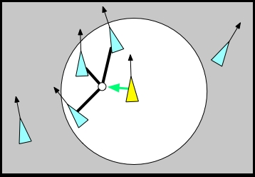
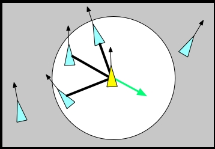
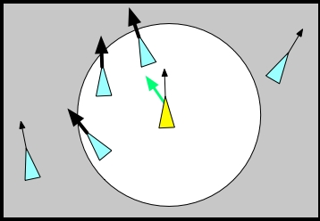

Intro to Game Development
Part 4
Holden Profit
Finite State Machines
What is a Finite State Machine (FSM)?
An object that can be in only one state of a given number of predetermined states at a time.
It is a tried and true method to make code more organized, readable, scalable, and maintainable.
Finite State Machines
A basic approach to FSM would be the standard
"if this then do that else if this then do that"
or even a
"switch expression case A case B ..."
that you learned early on as a programmer. This approach, however, doesn't scale well and
can quickly lead to a huge mess of spaghetti code.
Finite State Machines
State Transition Tables and Embedded Rules are a few ways to help implement your FSM that will save you headaches down the line.
Finite State Machines - State Transition Table
To borrow a metaphor from
Programming Game AI By Example,
imagine a robotic cat:
By default all it can do is sit. However, there are slots on the robo-kitty that accept state cartridges and
in the kitty's head is a chip with rules that determine when the kitty should change from one cartridge to another.
Finite State Machines - Embedded Rules
Keeping with the robo-kitty example from before, now instead of a chip in the kitty's head that determines what state should be changed to and from, such rules are now embedded on the cartridges themselves.
Autonomous Movement
Autonomous behavior and movement is basically what makes up Swarm Intelligence. Individual entities
are able to determine where they want to move to next based on the world around them. Several factors
influence how an entity will move.
- Cohesion
- Separation
- Alignment
- Wandering
Autonomous Movement - Cohesion

Image Source
Autonomous Movement - Cohesion
Take the position of all nearby entities

Autonomous Movement - Cohesion
Add the positions of the nearby entities together


Autonomous Movement - Cohesion
Divide the total by the number of nearby entities

Autonomous Movement - Cohesion
Subtract the result from the current entity's position

Autonomous Movement - Cohesion
let cohesion = function(currentEntity, otherEntities) {
let cohesionForce = new Vector(0, 0);
let numberOfEntities = otherEntities.length;
for (let entity of otherEntities) {
if (currentEntity != entity) {
// entity.position is a Vector in this case
cohesionForce = cohesionForce.add(entity.position);
}
else {
numberOfEntities--;
}
}
cohesionForce = cohesionForce.divide(numberOfEntities);
return cohesionForce.normalize();
}
Autonomous Movement - Separation

Image Source
Autonomous Movement - Separation
For a given neighbor, subtract the neighbor's position from this entity's position and reverse it

Autonomous Movement - Separation
Repeat this process for each neighbor, keeping the resulting vectors

Normalize each of the resulting vectors

Autonomous Movement - Separation
Add the resulting vectors together

Autonomous Movement - Separation
Normalize the total for the separation force

Autonomous Movement - Separation
let separation = function(currentEntity, otherEntities) {
let separationForce = new Vector(0, 0);
for (let entity of otherEntities) {
if (currentEntity != entity) {
let distBetween = currentEntity.position.subtract(entity.position);
distBetween = distBetween.normalize();
separationForce = separationForce.add(distBetween);
}
}
return separationForce.normalize();
}
Autonomous Movement - Alignment

Image Source
Autonomous Movement - Alignment
For a given neighbor, store it's velocity

Autonomous Movement - Alignment
Repeat this for each neighbor

Autonomous Movement - Alignment
Add the stored velocities together

Autonomous Movement - Alignment
Normalize the result

Autonomous Movement - Alignment
let alignment = function(currentEntity, otherEntities) {
let alignmentForce = new Vector(0, 0);
for (let entity of otherEntities) {
if (currentEntity != entity) {
alignmentForce = alignmentForce.add(entity.velocity);
}
}
return alignmentForce.normalize();
}
Autonomous Movement - Wander
TODO: Make wander slides
Autonomous Movement - Wander
const randomClamped = function() {
return Math.random() * 2 + -1;
}
const wanderRadius = 10;
const wanderDistance = 20;
const wanderJitter = .25;
const wander = function(entity) {
const toAdd = new Vector( randomClamped() * wanderJitter,
randomClamped() * wanderJitter);
entity.wanderTarget = entity.wanderTarget.add(toAdd);
entity.wanderTarget = entity.wanderTarget.normalize();
let endPoint = entity.position.add(entity.velocity.normalize() * wanderDistance);
endPoint = endPoint.add(entity.wanderTarget);
const distBetween = endPoint.subtract(entity.position);
return distBetween.normalize();
}
Path Finding
A useful tool for any game, path finding will allow your game entities to find routes to travel on that will get them where they're going the fastest.
Path Finding
There are many different pathfinding algorithms and variances on some of those still that are adapted for more precise situations. Some methods include:
- Breadth First Search
- Depth First Search
- Best First Search
- Djikstra's Method
- A*
Path Finder - Breadth First Search

Path Finder - Breadth First Search
const breadthFirstSearch = function(graph, root, goal) {
let set = {};
let queue = [];
root.parent = null;
set[root.id] = root;
queue.push(root);
while (queue.length !== 0) {
let current = q.pop();
if (current.id === goal.id) {
return current.id;
}
for (let node in current.neighbors) {
if (!set[node.id]) {
set[node.id] = node;
node.parent = current;
queue.push(node);
}
}
}
}
Path Finder - Depth First Search

Path Finder - Depth First Search
const depthFirstSearch = function(graph, node, goal) {
if (node.id === goal.id) {
return node;
}
node.visited = true
for(let neighbor of node.neighbors) {
if (!neighbor.visited) {
let found = depthFirstSearch(graph, neighbor);
if (found) {
return found;
}
}
}
return null;
}
Path Finder - A*